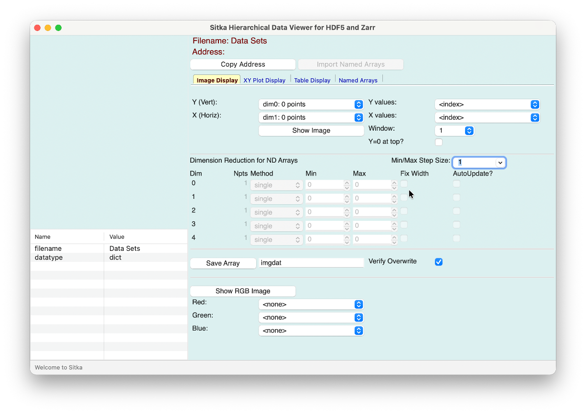
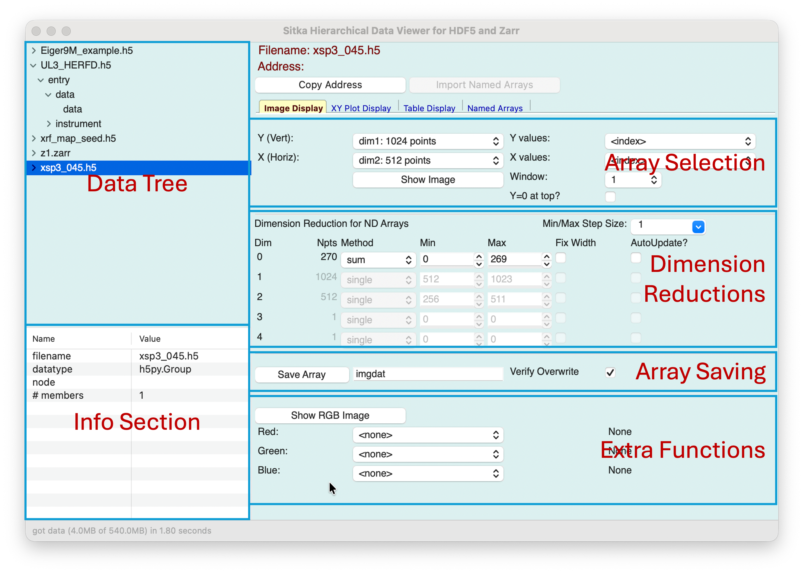
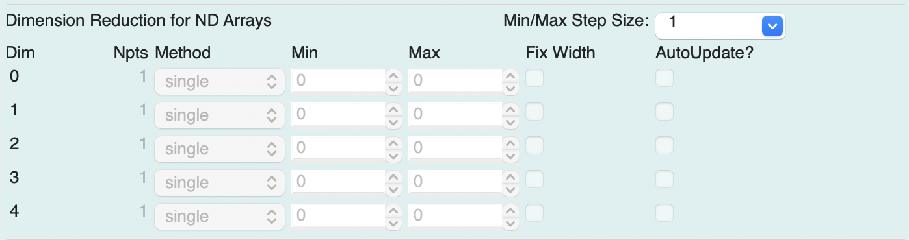

Using Sitka¶
In this section, we’ll give information for starting the Sitka GUI, loading, and using datafiles.
Running the Sitka GUI¶
Sitka can be used as a stand-alone GUI application or from a Python REPL or Jupyter Notebook.
Using the command-line sitka program¶
To run sitka from a command-line terminal, use
sitka
You can use the ‘-d’ option to specify a directory from which to read datasets, as with
sitka -d /home/User/data
Creating and Using a Desktop shortcut¶
If you have created the desktop shortcut (see Creating the Desktop Shortcut), then clicking on that should launch the main Sitka application.
Running Sitka from a Python shell or Jupyter Notebook¶
You can run the Sitka viewer from within a Python shell or Jupyter notebook that is connected to your computer (that is, supports drawing to your local screen) to get an interactive graphical exploration of your data. To do this, use:
from sitka_spruce import sitka_viewer
sview = sitka_viewer()
You can also optionally specify a directory from which to read datasets with
sview = sitka_viewer(folder='/home/User/data')
This will launch the Sitka GUI application in a Window outside of the Python shell or Jupyter notebook.
The Sitka Viewer will allow the shell or notebook to remain active while the viewer also runs. That is, you can load and visualize data as with the standalone application. You can also use the shell or notebook to access the data in the Sitka Viewer, either adding datasets to the GUI or pulling arrays from the GUI into the shell.
#!/usr/bin/env python
# coding: utf-8
# This notebook demonstrates using the Sitka Data Viewer within a Jupyter Notebook.
#
# Sitka is an interactive viewer for HDF5 files and Zarr stores. Using it from
# Jupyter allows you to
# 1. use the GUI to browse and explore the data and choose which datasets and arrays to work with in the Jupyter session.
# 2. push nd-arrays from your Jupyter notebook into the Sitka GUI, allowing you to use it for visualization and exporting multiple arrays to HDF5 files.
#
#
# Since you can easily move data between the Jupyter session and the Sitka viewer, you can use Sitka as a visualization and extraction tool for nd-arrays in your Jupyter notebooks.
# In[1]:
# Step 0: if not already downloaded, get the Sitka example files
import os
from pathlib import Path
xrfmap1 = Path('xrf_map_seed.h5')
if not xrfmap1.exists():
print("Downloading Sitka Examples")
import get_sitka_examples
filelist = os.listdir('.')
print("Files: ", filelist)
# In[2]:
# Step 1: import and start the Sitka Viewer
# This will show the Sitka GUI in a separate window,
# and read in all the data HDF5/Zarr files in the current folder.
from sitka_spruce import sitka_viewer
sview = sitka_viewer(folder='.')
# In[3]:
# The Sitka Viewer holds its data in the `data` attribute of the Sitka_Viewer, this has a
# has a few useful attributes.
#
# And the Sitka Viewer has a few useful methods for accessing its data:
# First, its "data" attribute really holds the data and can be accessed with:
# data.datasets dict of {Filename: Data Object (h5py.File or zarr.Group)}
# data.arrays dict of {Name: ndarray} for named arrays
# data.array_addrs dict of {Name: access string} for how named arrays were created
# data.export_hdf5(filename, list_of_arraynames) export a list of named arrays to an HDF5 file.
#
# Second, the Sitka Viewer has methods to add a dataset (and HDF5 File, Group, Dataset or Zarr Group, Array),
# or a plain nd-array:
# add_dataset(filename, fileroot) add a dataset into Sitka
# add_array(arrayname, ndarray) add an array into the list of named arrays
print('Datasets: ', sview.data.datasets)
print('Named Arrays: ', list(sview.data.arrays.keys()))
# datasets['Eiger9M_example.h5']['entry/data/data'][0,:,:]
# In[4]:
# if you copy an address with Ctrl-C in the Sitka window, you can paste it here and use it to extract data:
## Ctrl-V might give something like
## ['xrf_map_seed.h5']['xrfmap/mca/counts'][:,:,250:350].sum(axis=2)
## in this session, you cand use that from `sview.data.datasets`:
map1 = sview.data.datasets['xrf_map_seed.h5']['xrfmap/mca/counts'][:,:,250:350].sum(axis=2)
# now that you have the address to get slice of that array, you can easily get another slice of the data:
map2 = sview.data.datasets['xrf_map_seed.h5']['xrfmap/mca/counts'][:,:,350:450].sum(axis=2)
print(map1.shape, map1.dtype)
# now you have all of Python to do some work on those arrays. As a simple example,
# we'l take the square of th difference of the two arrays:
mapx = (map2-map1)**2
# and now we put that back into Sitka for viewing
sview.add_array('xrf_diff1', mapx, "(map2-map1)**2")
# The "Named Arrays" Page should be shown... click on 'xrf_diff1' and then "Plot Current"
With this approach, you can quickly load and explore your datasets and extract and use the arrays you want for downstream processing.
Basic Usage of the Sitka GUI¶
On Startup the Sitka GUI will look like this:
{kind=link}

with an empty panel in the upper left. To read in data from an HDF5 file or Zarr directory store using the File -> Read Data File, or Ctrl-O (Option-O on MacOS), or simply drag the file on the Data Tree portion of the Sitka app. The file will be opened and shown in the Data Tree section of the Window. Sitka always opens the files in “read only” mode, and will not ever write to the data files you open.
Note
The examples shown throughout this document can retrieved by downloading and running the get_sitka_examples.py script.
Overview of the main Sitka Window¶
{kind=link}

The main window is broken into several sections, as shown above. This should be familiar to anyone who has used one of the other HDF5 viewers (see Motivation for Sitka Spruce for a partial list).
A Data Tree in the upper left lets you browse through the Tree-like structure of the hierarchical datasets.
An Info Section in the lower left will show information about the Groups and Datasets (or Arrays), including datatype, shape, chunking, compression, and the list of attributes saved in the Group or Dataset.
The Right-hand panel has a notebook interface with pages for Image Display, XY Plot Display, Table Display, and Named Arrays. The first three of the pages help you select and display multi-dimensional arrays, and have similar forms, with the sections shown in the screenshot above.
An Array Selection panel in the upper section of the notebook page allows you to select one more dimensions of the Array data.
A Dimension Reduction panel in the middle section of the notebook page allows you to select how to “reduce” other dimensions of the dataset, either selecting a single element or a range of values to sum. See The Dimension Reduction Panel for more details.
An Array Saving panel at the bottom of the notebook page allows you give a name to the array selected, which can then be shown or exported later. See Saving Arrays by Name and Copying the Array Address for details.
Plots and Table displays for selected data arrays will be shown in separate windows. Each of the notebook pages will be discussed in detail in a separate section:
In the following sections we discuss common features for many of these panels.
Saving Arrays by Name¶
For the Notebook Panels, the array data selected for viewing can be saved to a named array, which allows it to be used later (and without having to re-extract it from the file). In the lower panel, simply typing a name (which must follow the valid conventions for a Python variable: A letter or underscore followed by any number of letters, numbers, or underscore) and hitting return or the “Save Array” button will save the array by name. By default, this will ask to verify overwriting an existing array, but this can be controlled with the “Verify Overwrite” checkbox.
Copying the Array Address¶
As you browse through Groups and Datasets and as you build arrays for plotting or display, you may find data components, slices, and addresses that you want to use for downstream processing. Using Ctrl-C (Option-C on macOS), or hitting the “Copy Address” button above the Notebook pages will copy the Python syntax for the array address to the system clipboard. For an image display that sums over a selected number of frames, the copied address may look like
['myeiger_file.h5']['/entry/data/data'][10:20,:,:].sum(axis=0)
If your are using Sitka from A Jupyter notebook or Python shell, you may need to pre-pend the address to the Sitka datasets, as with
myimage = sview.data.datasets['myeiger_file.h5']['/entry/data/data'][10:20,:,:].sum(axis=0)
Exporting Group/Dataset Metadata¶
Just as you can copy array addresses, you can also export the values shown in the “Info Section” for any Group or Dataset. Using Ctrl-E (Option-E on macOS) will bring up a dialog to save the data shown in the table in the “Info Section” to a tab-separated file.
The Dimension Reduction Panel¶
The “Dimension Reduction” panel assists you in converting multi-dimensional datasets into 1- and 2-dimensional arrays for XY plots, image display, and table display.
This panel might looks like this:
{kind=link}

Here, dimensions 0 and 1 are “grayed out”, so must have been selected as the Y or X arrays for an image or table display. The remaining dimension has 2048 points, and selections here tell Sitka how to turn this data into a single dimension, to reduce the 3-dimensional data to 2-dimensions for display. The example here will select a single value, pixel 1024 out of 2048. The Method selection of single can be changed to sum or mean, and then a Min and Max value can be chosen to select a “slice” of the array dimension to sum (and perhaps divide by the number of points to give the mean value).
If choosing a slice range for sum or mean, you can check the “Fix Width” box. With this checked, changing either the Min or Max value (with the arrows or by typing in a number) will update both values to try to preserve their difference. You can change the size of the step taken by the arrow with the “Min/Max Step Size” selection - this has a pre-loaded set of choices, but you can enter any integer step size you like.
Finally, if you check the “Auto Update” box, then changing the Min or Max value will update the display to reflect the newly sliced data.
A note on speed of Array Selection¶
HDF5 and Zarr hold data in chunks of binary data on disk, with optional compression. These settings are displayed in the Info section.
Extracting data from HDF5 and Zarr may no be instantaneous. In certain cases, it may even appear to be “slow”. The extraction speed can depend greatly on the chunking and compression used, and the data size. We will assert that the speed of extracting data from HDF5 files is fully within the HDF5 library, and not because “Python is slow” or “matplotlib is slow” or “wxPython is slow”. If you have suggestions for speeding up data extraction or display, we’ll be happy to hear them.